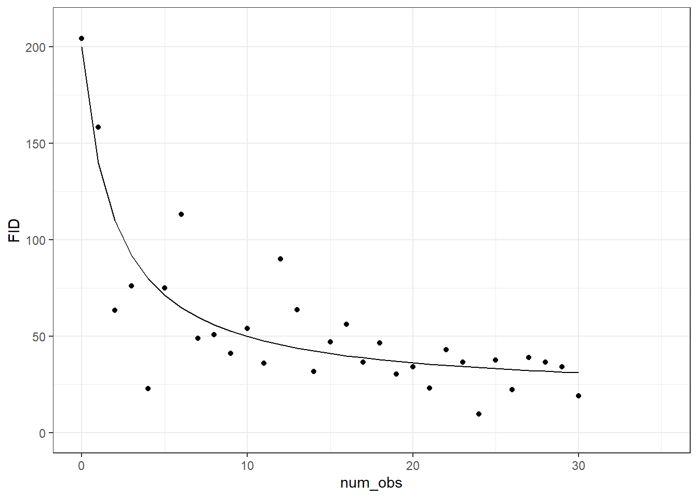

Simulations to measure the performance of a nonlinear model of habituation
Author
Andrew MacDonald
Introduction
It is important to validate our statistical models before using them to reach conclusions about ecological systems. In this paper we propose a nonlinear, hierarchical statistical model to capture how Flight Initiation Distance changes with increased exposure. In this Appendix we use simulations to validate this new model, following the suggestions of @(DiRenzo, Hanks, and Miller 2023). We use simulations to answer several distinct questions:
Which priors are appropriate? in hierarchical nonlinear models, it is impossible to select appropriate priors by inspection. Instead we use prior predictive checks: we select values from the prior and use these to create fake datasets.
Does the model recover parameters with large datasets? In models with many parameters, there is always the risk that parameters are difficult to estimate well. We fit a model with a large number of Tamia , each observed for many repeat observations, to validate that in this “idea” setting the model works well.
Does the model recover parameters in our dataset? Our field dataset contains unequal numbers of observations for each chipmunk, and field constraints mean that sample size in particular treatment combinations is limited. We simulate observations, while keeping every aspect of our dataset the same (treatments, number of observations per individual, etc). If a model can recover true parameters here, we can be more confident about applying it to our real observations.
Can unbalanced categories lead to spurious effect size estimates? Due to small sample effects, we do not have exactly equal representation in all of our treatment combinations. This is especially important in model 4, where we include sex and several aspects of individual personality in our model (see main text). Importantly, because of male chipmunk behaviour, males have fewer observations per individual than do females. We use simulations to confirm that any effects of sex or personality on our results is not caused by the structure of the data.
Mathematical description
In this Appendix we validate the following model of Flight Initiation distance:
Two examples of the function (left) and the potential observations (right) described by our model.

Two examples of the function (left) and the potential observations (right) described by our model.
Prior predictive simulations
Simulating data from a prior is essential for defining priors that reflect knowledge about a system. Here we have chosen very general priors that cover a wide range of FID responses to threat treatment. This includes many which are biologically implausible, indicating that our prior is not too restrictive. However it excludes many cases that do not match our knowledge of the system: for example, FIDs which increase with exposure, or extremely rapid or slow habituation.
Simulations from the prior predictive distribution for our model of FID (Flight initiation distance).
We can understand hyperparameters (i.e. \(\sigma_M, \sigma_p, \sigma_d\) and \(R\)) by simulating and asking if they represent a plausible range of between-tamia variation. Again, we try to cover a range of plausible values while allowing for extreme cases.
The above simulations are each datasets which, according to our model, are plausible observations for our experiment. If the same model is fit to the data, we should recover the parameters we used to create it. We fit the model described above to 25 simulated datasets. Each simulation produced a different datset with distinct parameter values. The model is fit to each, and we report a model as ‘successful’ if that simulation’s true parameter value is above the 2.5th percentile and below the 97.5th (ie within the 95% credible interval).
Proportion of coverage for all parameters (left) and for all the population-level parameters (right). That is, the right-hand figure shows only the main effects, shape parameter, and hyperparameters; it excludes the individual values of M, p and d for each individual.
Proportion of coverage for all parameters (left) and for all the population-level parameters (right). That is, the right-hand figure shows only the main effects, shape parameter, and hyperparameters; it excludes the individual values of M, p and d for each individual.
Design data
let’s use the actual design data to fit the model
Prior predictive checks
tar_load(prior_simulation_design)prior_simulation_design |> tidyr::unnest(simulated_data) |>ggplot(aes(x = num_obs, y = epred, group = tamia_id)) +geom_line() +facet_wrap(~draw_id, ncol =5)
fit to many of these and look at posterior coverage
DiRenzo, Graziella V., Ephraim Hanks, and David A. W. Miller. 2023. “A Practical Guide to Understanding and Validating Complex Models Using Data Simulations.”Methods in Ecology and Evolution 14 (1): 203–17. https://doi.org/10.1111/2041-210X.14030.